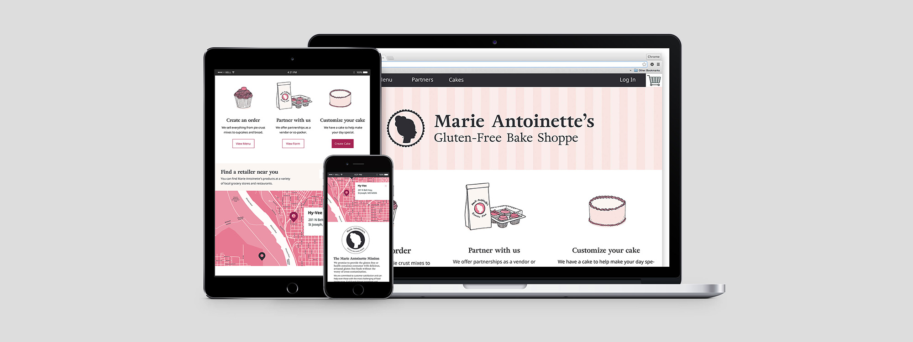

Role
Led data visualizations, design of component library and hi-fidelity mock-ups, grid and typescale, brand, packaging, and illustrations. Collaborated on wireframing, and information architecture redesign.
Work
Provide scalable solutions to a growing bakery.
Provide scalable solutions to a growing bakery.
Marie’s is a small and rapidly expanding bakery in Wathena, Kansas-City, that offers gluten-free items both in store, and in partner stores across the greater Kansas-City area. The bakery needed a simplified shopping experience, a more robust tool to document orders and performance, and a brand system to move forward with, fast.
Omni-channel Ecosystem
Understanding users’ needs and use cases
The project extended to multiple users with unique needs. These users were categorized into three groups: shoppe personas, wholesale personas, and retail personas.
Wholesale Personas
- The Store Buyer, responsible for purchasing products, managing accounts, and assisting customer purchases.
- The Store Owner, responsible for paying for invoices, advertising, and maintaining supplier relationships.
Retail Personas
- The Gluten-free wholesale buyer, looking to purchase larger quantities from wholesaler.
- The Gluten-free retail buyer, looking for gluten free products at smaller scale, such as cakes, etc. Places order to pick up at shoppe.
- The Gluten-free Retail Buyer.....
Below is a diagram that identifies the greater system the personas operate within.
Redesign
Site Information Architecture
information arch
Retail-facing site
Excess pages and content were cut and reorganized for a concise, mobile-first experience.
The shopping cart experience and menu were redesigned, and a custom cake-builder tool was created to streamline and digitize the manual ordering process. To see the updated site, check it out here.
Shoppe + Wholesale Site
Initial wireframing and interactive prototype testing highlighted the importance of this software in our users’ day to day lives. For the bakers and delivery personnel, this tool would be used constantly throughout their days. It became clear that notifications or up-to-date alerts would be needed. Additional modifications included a customizable dashboard, updated table system, and ingredient/recipe entry to provide more accurate data entry and insight into company, vendor, and product performance.
Wireframing + Ideation
Menu


Shopping Cart


Goal Setting


Cake Builder


Style Guide + Component Library
As a whole, the previous experience lacked clarity in the user experience and consistency in the visual system. Too many interactions mixed with too much content created an overwhelming and under delivering experience. From a visual standpoint, all sides of the tool needed to be reconsidered. A typescale and flexible grid system were introduced, in addition to two palettes, one for the shopping and one for the software side.


Branding Update
Logo
Before coming onto the team, Marie’s had an established identity, and was frequently selling out in stores. With a faithful customer and growing consumer base, the goal was to push the brand forward, increase brand recognition, and elevate the product. Brand attributes included:_______. To accomplish this I pulled in strong geometric shapes to update the silhouette and a serif type that brought structure and a classic feel.
Look and Feel
Marie’s Gluten-Free takes inspiration not only from Dauphine of France, but from the 18th-century, a time of both extravagance and change. Pulling from this time period, I drafted up a moodboard bridging this time period with today.

To contrast and compliment the logo, and allow for flexibility and independence from photography, illustrations were integrated into the system.
Packaging
Marie’s delights customers when they learn just how friendly the baked goods and mixes are to their dietary restrictions. Despite this, however, the founder frequently received questions around the allergy-friendliness of her products. To provide assurance and continue to delight the customer, the packaging needed to be clear, but also communicate the brand attributes.